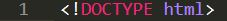

<!DOCTYPE>
| Description | Exemple | Résultat de l'exemple |
|---|---|---|
|
la balise DOCTYPE est utilisée à la première ligne du fichier html . |
 |
Le résultat de cette balise ne peut pas être visualisé.Elle est consomée par le navigateur web et il n y a pas de rendu visible |